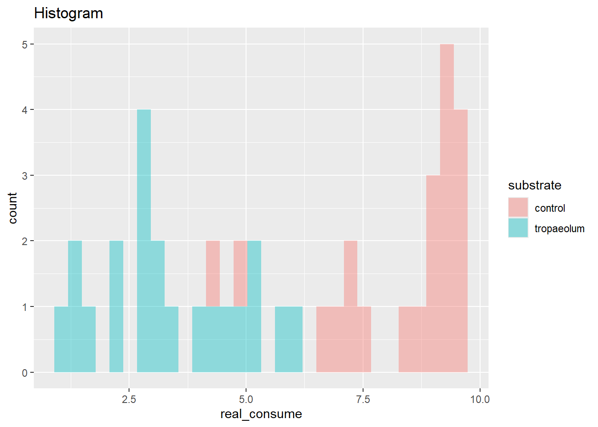
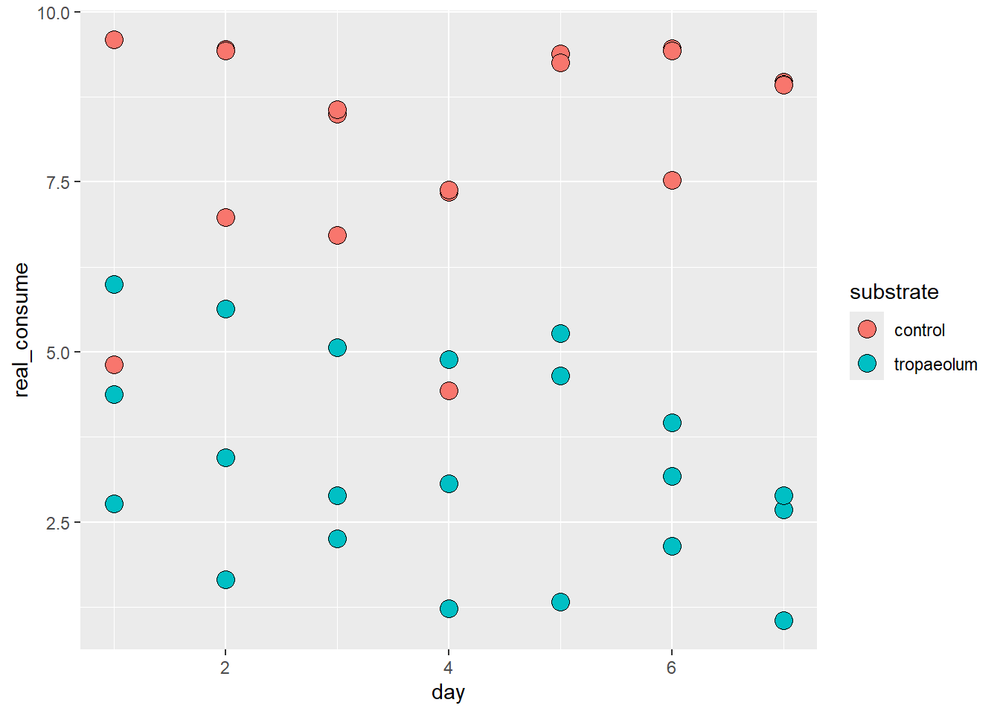
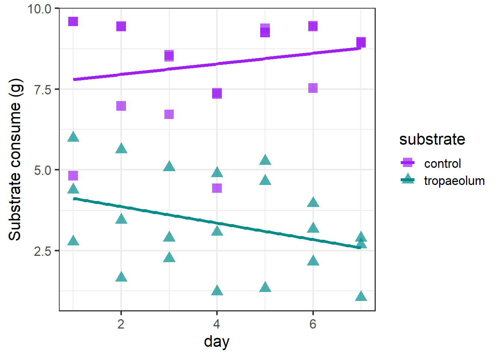
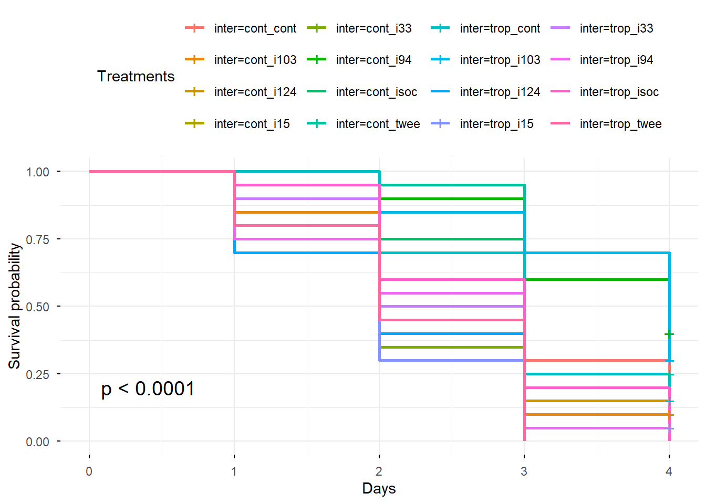

library(readxl) #leitura do arquivo excel
library(dplyr) #manipulação dos dados
library(survival) #análise de sobrevivência
library(survminer) #gráficos de sobrevivência
#install.packages("coxme")
library(coxme) #modelo de cox com efeitos aleatórios
library(lme4) #modelos lineares generalizados mistos (glmm)
library(car) #ANOVA tipo III para glmm
#install.packages("emmeans")
library(emmeans) #comparações mútiplas post-hoc
#install.packages()
library(drc) #curvas dose-resposta e cálculo de TL50
library(tidyverse)Collective defense strategies
Isolates selection
Rationale
The first phase of this study aimed to select an entomopathogenic fungal isolate to evaluate how a toxic substrate affects the collective immune defense of Atta sexdens.
Pathogenicity was evaluated on A. sexdens foragers exposed to five Metarhizium robertsii isolates—kindly provided by the Laboratório de Interações Inseto-Microrganismos at the Universidade Federal de Viçosa.
Twenty-four hours prior to the bioassays, colonies were starved. Following starvation, colonies were randomly assigned to two groups and exposed to one of two substrate regimes for seven days: (i) 10.0 g of Acalypha wilkesiana leaves daily (control group), or (ii) 10.0 g of fresh Tropaeolum majus leaves daily, serving as a potential modulating agent of social defenses.
After this period, individual ants from these colonies were immersed for two seconds in a conidial suspension at a concentration of 1x10⁶ conidia/mL, containing distilled water and 0.01% Tween 80. Three control groups were evaluated: (1) an aqueous solution of 0.01% Tween 80 (vehicle control), (2) distilled water (negative control), and (3) a 0.0001% isocycloseram solution (positive control). Each treatment consisted of four replicates (Petri dishes) with five foragers each. Ants were housed in Petri dishes lined with moistened filter paper and maintained in a BOD incubator at 27 ± 2 °C, 70 ± 10% relative humidity, and continuous darkness (0:24 h L:D). The ants were starved throughout the 4-day evaluation period, and mortality was recorded daily. Dead individuals were immediately removed and transferred to individual moist chambers (microcentrifuge tubes containing cotton and autoclaved distilled water) to evaluate fungal sporulation (confirming mycosis).
Statistical analysis
The statistical analysis for the pathogenicity bioassay data was conducted in R using a multi-step framework. Survival curves were generated using the Kaplan–Meier estimator and compared across isolates and controls via the log-rank test to evaluate daily mortality rates. To quantify the hazard ratios (HR) of substrate type, fungal treatment, and their interaction (substrate:treatment), a mixed-effects Cox proportional hazards model (coxme) was fitted, specifying the Petri dish (replicate) as a random effect to account for pseudo-replication. Finally, the median lethal time (LT₅₀) for each treatment combination was estimated using dose-response modeling via the drc package.
Results
Instalando e carregando os pacotes
Foraging data
foraging_exp1 <- read_excel("foraging_bioassay_1.xlsx")
ggplot(data = foraging_exp1, aes(x = real_consume, fill = substrate)) +
geom_histogram(alpha = .4) +
labs(title = "Histogram")
ggplot(data = foraging_exp1, aes(x = day, y = real_consume, fill = substrate)) +
geom_point(shape = 21, size = 4, color = "black")
ggplot(data = foraging_exp1, aes(x = day, y = real_consume,
color = substrate, shape = substrate)) +
geom_point(size = 4, alpha = .7) +
geom_smooth(method = "lm", se = FALSE) +
scale_shape_manual(values = c(15, 17)) +
scale_color_manual(values = c("purple", "cyan4")) +
theme_bw(base_size = 16) +
labs(x = "day", y = "Substrate consume (g)",
color = "substrate", shape = "substrate")
Para analisar dados de consumo diário com medições repetidas nas mesmas colônias ao longo de 7 dias, a abordagem ideal é utilizar um Modelo Linear Misto (LMM) para isolar a autocorrelação temporal das colônias e contornar o baixo poder estatístico inicial do tamanho amostral (n = 3 colônias por substrato).Estatística Descritiva e ExploratóriaMétricas Diárias: Calcule média, erro-padrão da média (EPM), mediana e amplitude interquartil de real_consume agrupados por substrate e day.Objetivo: Mapear a trajetória central do consumo ao longo do tempo e verificar a variabilidade inter-colonial de cada grupo, além de identificar eventuais outliers.Análise Inferencial: Modelo Linear Misto (LMM)Por que usar: Cada colônia foi medida 7 vezes consecutivas, violando a premissa de independência de uma ANOVA tradicional. O LMM insere colony como efeito aleatório \((1 \vert{} \text{colony})\) para controlar a variação individual, enquanto substrate e day entram como efeitos fixos testando a interação \(\text{substrate} \times \text{day}\).Validação de Premissas: Avalie a normalidade dos resíduos do modelo via teste de Shapiro-Wilk. Caso os resíduos violem a normalidade, aplica-se transformação nos dados (ex: \(\log(y + 1)\)) ou utiliza-se um Modelo Linear Generalizado Misto (GLMM) com distribuição Gama.Estratégia de Visualização CientíficaPara relatórios ou publicações, o gráfico ideal combina a tendência central do tratamento com a variação individual de cada unidade experimental (spaghetti plot sobreposto por médias):Linhas finas e transparentes ao fundo: Trajetória individual diária das 6 colônias (mostra a variação biológica real).Linhas espessas em destaque: Média diária de cada substrato ao longo dos 7 dias.Sombreamento (Ribbon): Representação gráfica do Erro-Padrão da Média (\(\pm \text{SE}\)).
# 1. Pacotes Necessários --------------------------------------------------
if (!require("pacman")) install.packages("pacman")
pacman::p_load(tidyverse, lme4, lmerTest, car, emmeans)
# 2. Dados Exemplo (Substitua pela leitura do seu CSV) -------------------
# dados <- read.csv("seu_arquivo.csv")
set.seed(42)
dados <- expand.grid(day = 1:7, colony = factor(1:6), substrate = c("Substrato_A", "Substrato_B")) %>%
filter((substrate == "Substrato_A" & colony %in% 1:3) |
(substrate == "Substrato_B" & colony %in% 4:6)) %>%
mutate(real_consume = rnorm(n(), mean = ifelse(substrate == "Substrato_A", 10 + day*1.5, 8 + day*0.4), sd = 1.2))
# 3. Estatística Descritiva -----------------------------------------------
descritiva <- dados %>%
group_by(substrate, day) %>%
summarise(
n = n(),
media = mean(real_consume, na.rm = TRUE),
se = sd(real_consume, na.rm = TRUE) / sqrt(n),
mediana = median(real_consume, na.rm = TRUE),
.groups = "drop"
)
print("--- RESUMO DESCRITIVO ---")[1] "--- RESUMO DESCRITIVO ---"print(descritiva)# A tibble: 14 × 6
substrate day n media se mediana
<fct> <int> <int> <dbl> <dbl> <dbl>
1 Substrato_A 1 3 12.0 0.594 11.4
2 Substrato_A 2 3 13.8 0.896 13.8
3 Substrato_A 3 3 14.5 0.228 14.4
4 Substrato_A 4 3 15.7 1.47 16.8
5 Substrato_A 5 3 17.6 1.65 18.0
6 Substrato_A 6 3 18.9 0.939 18.9
7 Substrato_A 7 3 20.9 0.722 20.2
8 Substrato_B 1 3 7.18 0.884 6.34
9 Substrato_B 2 3 8.16 0.222 8.03
10 Substrato_B 3 3 9.53 0.724 9.75
11 Substrato_B 4 3 9.67 1.54 10.4
12 Substrato_B 5 3 10.3 0.519 10.0
13 Substrato_B 6 3 10.1 0.283 10.1
14 Substrato_B 7 3 10.2 0.793 10.4 # 4. Modelo Linear Misto (LMM) -------------------------------------------
dados$day_num <- as.numeric(dados$day)
# Modelo testando efeito fixo do substrato, dia e interação, com efeito aleatório da colônia
modelo <- lmer(real_consume ~ substrate * day_num + (1 | colony), data = dados)
# Teste de Normalidade dos Resíduos
print("--- NORMALIDADE DOS RESÍDUOS ---")[1] "--- NORMALIDADE DOS RESÍDUOS ---"print(shapiro.test(residuals(modelo)))
Shapiro-Wilk normality test
data: residuals(modelo)
W = 0.98109, p-value = 0.7038# Tabela ANOVA (Tipo III)
print("--- TABELA ANOVA (EFEITOS FIXOS) ---")[1] "--- TABELA ANOVA (EFEITOS FIXOS) ---"print(Anova(modelo, type = "III"))Analysis of Deviance Table (Type III Wald chisquare tests)
Response: real_consume
Chisq Df Pr(>Chisq)
(Intercept) 203.5219 1 < 2.2e-16 ***
substrate 9.0434 1 0.002636 **
day_num 88.0044 1 < 2.2e-16 ***
substrate:day_num 19.2067 1 1.173e-05 ***
---
Signif. codes: 0 '***' 0.001 '**' 0.01 '*' 0.05 '.' 0.1 ' ' 1# Médias Ajustadas e Comparações
print("--- MÉDIAS AJUSTADAS (EMMEANS) ---")[1] "--- MÉDIAS AJUSTADAS (EMMEANS) ---"print(emmeans(modelo, ~ substrate | day_num))day_num = 4:
substrate emmean SE df lower.CL upper.CL
Substrato_A 16.2 0.411 4 15.06 17.3
Substrato_B 9.3 0.411 4 8.16 10.4
Degrees-of-freedom method: kenward-roger
Confidence level used: 0.95 # 5. Visualização Científica (ggplot2) -----------------------------------
grafico <- ggplot() +
# Trajetórias individuais de cada colônia
geom_line(data = dados,
aes(x = day, y = real_consume, group = colony, color = substrate),
alpha = 0.35, linetype = "dashed", linewidth = 0.7) +
# Intervalo de erro-padrão
geom_ribbon(data = descritiva,
aes(x = day, ymin = media - se, ymax = media + se, fill = substrate),
alpha = 0.2) +
# Linha média do substrato
geom_line(data = descritiva,
aes(x = day, y = media, color = substrate, group = substrate),
linewidth = 1.2) +
geom_point(data = descritiva,
aes(x = day, y = media, color = substrate),
size = 3) +
# Estética e Escalas
scale_x_continuous(breaks = 1:7) +
scale_color_brewer(palette = "Set1", name = "Substrato") +
scale_fill_brewer(palette = "Set1", name = "Substrato") +
labs(
x = "Tempo de Exposição (Dias)",
y = "Consumo Real (g)",
title = "Dinâmica Diária de Forrageamento",
subtitle = "Média ± EPM (n = 3 colônias/substrato). Linhas pontilhadas indicam colônias individuais."
) +
theme_classic(base_size = 12) +
theme(
legend.position = "top",
plot.title = element_text(face = "bold", size = 14),
axis.title = element_text(face = "bold")
)
print(grafico)
Survival curves (Kaplan-Meier)
Lendo e preparando os dados
dados <- read_excel("isolates_selection_bioassay_1.xlsx")
#definindo as variáveis categóricas e criando um ID único por placa de Petri
dados <- dados %>%
mutate(
substrate = as.factor(substrate),
treatment = as.factor(treatment),
inter = as.factor(inter),
rep = as.factor(rep),
id_placa = as.factor(paste(inter, rep, sep = "_"))
)#criando o objeto de sobrevivência
surv_obj <- Surv(time = dados$dias, event = dados$mortality)
#curvas de sobrevivência por tratamento de interação
fit_km <- survfit(surv_obj ~ inter, data = dados)
#teste de Log-Rank
logrank_test <- survdiff(surv_obj ~ inter, data = dados)
print(logrank_test)Call:
survdiff(formula = surv_obj ~ inter, data = dados)
N Observed Expected (O-E)^2/E (O-E)^2/V
inter=cont_cont 20 18 24.2 1.57863 3.5883
inter=cont_i103 20 18 18.4 0.00998 0.0218
inter=cont_i124 20 18 15.9 0.29100 0.5689
inter=cont_i15 20 19 15.7 0.70299 1.3551
inter=cont_i33 20 19 13.5 2.26444 4.2202
inter=cont_i94 20 12 26.5 7.97012 18.3213
inter=cont_isoc 20 20 18.4 0.13739 0.2964
inter=cont_twee 20 15 23.7 3.17577 7.2090
inter=trop_cont 20 17 20.3 0.52725 1.1229
inter=trop_i103 20 14 26.2 5.69287 13.2331
inter=trop_i124 20 20 13.7 2.91213 5.7328
inter=trop_i15 20 19 12.1 3.88901 7.1066
inter=trop_i33 20 20 14.9 1.78430 3.5608
inter=trop_i94 20 20 14.5 2.05414 4.2385
inter=trop_isoc 20 20 18.1 0.20646 0.4275
inter=trop_twee 20 20 13.0 3.76980 7.4241
Chisq= 76.6 on 15 degrees of freedom, p= 3e-10 #plotando a curva de sobrevivência
ggsurvplot(
fit_km,
data = dados,
pval = TRUE,
risk.table = FALSE,
legend.title = "Treatments",
xlab = "Days",
ylab = "Survival probability",
ggtheme = theme_minimal()
)
Mixed-effects Cox model (main effects + interaction)
fit_cox <- coxme(surv_obj ~ substrate * treatment + (1 | id_placa), data = dados)
summary(fit_cox)Mixed effects coxme model
Formula: surv_obj ~ substrate * treatment + (1 | id_placa)
Data: dados
events, n = 289, 320
Random effects:
group variable sd variance
1 id_placa Intercept 0.3530596 0.1246511
Chisq df p AIC BIC
Integrated loglik 75.65 16.0 1.002e-09 43.65 -15.01
Penalized loglik 125.66 31.6 3.632e-13 62.47 -53.37
Fixed effects:
coef exp(coef) se(coef) z p
substratetrop 0.1489 1.1606 0.4218 0.35 0.7240
treatmenti103 0.4156 1.5153 0.4183 0.99 0.3204
treatmenti124 0.5526 1.7378 0.4184 1.32 0.1866
treatmenti15 0.7276 2.0700 0.4200 1.73 0.0832
treatmenti33 0.9502 2.5863 0.4159 2.28 0.0223
treatmenti94 -0.7061 0.4936 0.4500 -1.57 0.1167
treatmentisoc 0.6991 2.0119 0.4128 1.69 0.0903
treatmenttwee -0.1759 0.8387 0.4308 -0.41 0.6830
substratetrop:treatmenti103 -1.0973 0.3338 0.6084 -1.80 0.0713
substratetrop:treatmenti124 0.3197 1.3767 0.5980 0.53 0.5929
substratetrop:treatmenti15 0.1732 1.1890 0.5930 0.29 0.7703
substratetrop:treatmenti33 -0.1951 0.8228 0.5877 -0.33 0.7399
substratetrop:treatmenti94 1.5473 4.6987 0.6177 2.51 0.0122
substratetrop:treatmentisoc -0.2778 0.7575 0.5863 -0.47 0.6356
substratetrop:treatmenttwee 1.2477 3.4822 0.6032 2.07 0.0386Median lethal time (LT₅₀) estimation
lt50_matrix <- quantile(fit_km, probs = 0.5)$quantile
lt50_table <- data.frame(
Treatment_Group = gsub("inter=", "", rownames(lt50_matrix)),
LT50_days = lt50_matrix[, 1],
row.names = NULL
)
print(lt50_table) Treatment_Group LT50_days
1 cont_cont 3.0
2 cont_i103 3.0
3 cont_i124 2.0
4 cont_i15 2.0
5 cont_i33 2.0
6 cont_i94 4.0
7 cont_isoc 3.0
8 cont_twee 3.0
9 trop_cont 3.0
10 trop_i103 4.0
11 trop_i124 2.0
12 trop_i15 2.0
13 trop_i33 2.5
14 trop_i94 3.0
15 trop_isoc 3.0
16 trop_twee 2.0Fungal pathogenicity and substrate interaction significantly affected Atta sexdens forager survival over time (Log-rank χ2 = 76.6, df = 15, p < 0.001). The mixed-effects Cox proportional hazards model revealed a significant interaction between substrate type and fungal isolate on mortality hazard (p = 0.0122). Specifically, exposure to isolate i94 on Tropaeolum majus substrate increased mortality risk 4.7-fold (HR = 4.70, z = 2.51, p = 0.0122) relative to control conditions. On the control substrate, isolate i33 displayed the highest independent toxicity (HR = 2.58, z = 2.28, p = 0.0223). Overall mortality was high across treatments and approached saturation by day 5, supporting the Cox proportional hazards analysis as the primary approach for assessing differences in mortality risk among treatments.